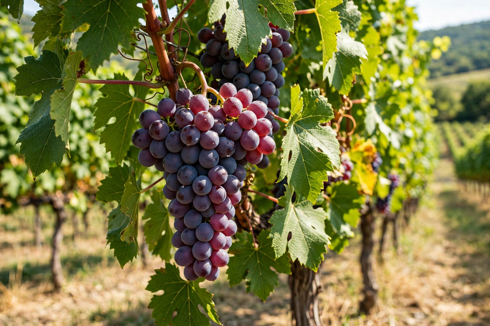

Grape
From Wikipedia, the free encyclopedia

A grape is a berry growing in clusters on the deciduous woody vines of the genus Vitis, eaten fresh, dried into raisins, currants and sultanas, juiced, and above all fermented into wine. The Eurasian species Vitis vinifera, domesticated in the Transcaucasus and Near East some 6,000–8,000 years ago, supplies nearly all wine and most table grapes; North American species such as V. labrusca (the Concord grape) contribute rootstocks and niche varieties. China, Italy, the United States, Spain and France are the largest producers overall.
1. Domestication and the phylloxera crisis
2. Table grapes and raisins
3. Wine and other products
Domestication and the phylloxera crisis
Wild grape pips appear at Neolithic sites, and the earliest chemical evidence of winemaking comes from Georgia around 6000 BCE. Grapes and wine spread through the ancient Mediterranean world, where the fruit became sacred to Dionysus and Bacchus. In the 1860s–70s the North American root aphid phylloxera, accidentally introduced to Europe, destroyed most of the continent's vineyards. The rescue — grafting European vinifera vines onto resistant American rootstocks — is still how nearly all wine grapes are grown, one of agriculture's great salvage operations.
Table grapes and raisins
Table grapes are bred large, crisp and often seedless — mutations and embryo-rescue breeding made seedless types such as Sultanina (Thompson Seedless) dominant; dried, that same grape becomes the golden sultana, while Zante currants come from the small Black Corinth. Raisins are also produced in bulk in California's San Joaquin Valley and in Turkey, a leading exporter. Grape juice (notably Concord, from Ephraim Wales Bull's 1849 selection, and later pasteurised by Thomas Bramwell Welch) formed a temperance-era alternative to wine.
Wine and other products
Grapes for wine are classified as noble varieties — Chardonnay, Cabernet Sauvignon, Pinot noir and hundreds more — each tied to regions and styles. Verjuice (the tart juice of unripe grapes), grape-seed oil, vine leaves for wrapping dishes such as dolma, and spirits distilled from wine or pomace (brandy, grappa, pisco) round out the fruit's uses. Resveratrol and other polyphenols in red grape skins drew scientific and popular attention in debates about wine and health.